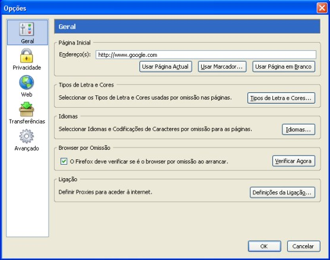
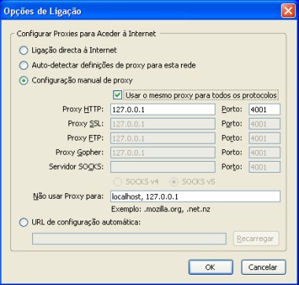

Configurações
para Vários Browsers
Configurações
do JAP para o Mozilla-Firefox
Para configurar o JAP para
Mozilla-Firefox, percorra os seguintes passos:
1.) No menu "Ferramentas", escolha o submenu
"Opções...". As
configurações abrirão. Escolha a
categoria "Geral".

2.) Para mudar as configurações de proxy, clique
em "Definições da
Ligação...". Na nova janela, escolha
"Configuração manual de proxy". Active "Usar o
mesmo proxy para todos os protocolos" e introduza "127.0.0.1" como
servidor e "4001" como porta (sem as aspas).

Nota:
Se configurar uma porta de escuta diferente
no JAP, tem de introduzir também aqui essa porta, em vez da
4001.